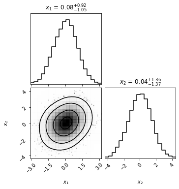

Metropolis Hastings
Contents
Metropolis Hastings#
import torch
dist = torch.distributions
import matplotlib.pyplot as plt
import pandas as pd
%matplotlib inline
import warnings
warnings.filterwarnings('ignore')
mix = dist.MixtureSameFamily(
mixture_distribution=dist.Categorical(torch.tensor([0.2, 0.8])),
component_distribution=dist.Normal(torch.tensor([0.1, 3]), torch.tensor([0.6, 3])),
)
x = torch.linspace(-4., 4, 5)
theta_range = torch.linspace(-8, 12, 100)
plt.plot(theta_range, mix.log_prob(theta_range).exp())
[<matplotlib.lines.Line2D at 0x165fa8c10>]
mix.mean, mix.stddev
(tensor(2.4200), tensor(2.9356))
next_sample = lambda cur_sample: dist.Normal(loc = cur_sample, scale=1).sample().item()
next_sample(1)
2.0207135677337646
p = lambda x: mix.log_prob(torch.tensor(x)).exp().item()
lp = lambda x: mix.log_prob(torch.tensor(x)).item()
p(2)
0.10151920467615128
num_iter = 10
xs = [None]*num_iter
xs[0] = 0.
plt.plot(theta_range, mix.log_prob(theta_range).exp())
plt.scatter(xs[0], p(xs[0]))
xs[1] = next_sample(xs[0])
plt.scatter(xs[1], p(xs[1]))
<matplotlib.collections.PathCollection at 0x166017fa0>
num_iter = 10
xs = [None]*num_iter
xs[0] = 0.2
plt.plot(theta_range, mix.log_prob(theta_range).exp())
plt.scatter(xs[0], p(xs[0]))
xs[1] = next_sample(xs[0])
plt.scatter(xs[1], p(xs[1]))
a = p(xs[1])/p(xs[0])
a
0.27602488498335154
u = dist.Uniform(0, 1).sample().item()
print(u)
0.049220144748687744
if u < a:
xs[1] = xs[0]
x_start = 0.
num_iter = 20000
xs = torch.empty(num_iter)
xs[0] = x_start
lu = torch.log(dist.Uniform(0, 1).sample([num_iter]))
for i in range(1, num_iter):
xs[i] = next_sample(xs[i-1])
la = lp(xs[i]) - lp(xs[i-1])
if lu[i] > la:
xs[i] = xs[i-1]
plt.plot(xs)
[<matplotlib.lines.Line2D at 0x1660a9d90>]
import seaborn as sns
plt.plot(theta_range, mix.log_prob(theta_range).exp(), label='True')
sns.kdeplot(torch.tensor(xs[:10000]), label='Samples obtained from MH')
plt.legend()
<matplotlib.legend.Legend at 0x16613f790>
xs[:1000].mean(), mix.mean, xs[:1000].std(), mix.stddev
(tensor(3.5472), tensor(2.4200), tensor(3.0889), tensor(2.9356))
import numpy as np
g = emcee.moves.GaussianMove(cov = 1.)
import emcee
nwalkers = 2
ndim = 1
log_prob = lp
p0 = np.random.rand(nwalkers, ndim)
sampler = emcee.EnsembleSampler(nwalkers, ndim, log_prob,moves=g)
state = sampler.run_mcmc(p0, 100)
sampler.reset()
sampler.run_mcmc(state, 10000, progress=True);
100%|████████████████████████████████████████████████████████████████████████████████████████████████████████████████████████████| 10000/10000 [00:03<00:00, 3105.40it/s]
samples = sampler.get_chain(flat=True)
plt.plot(samples)
[<matplotlib.lines.Line2D at 0x16619fd60>]
sns.kdeplot(samples.flatten(), label='EmCEE')
plt.plot(theta_range, mix.log_prob(theta_range).exp(), label='True')
sns.kdeplot(torch.tensor(xs[:10000]), label='Samples obtained from MH')
plt.legend()
<matplotlib.legend.Legend at 0x1661b3490>
Creating a function#
def mh(log_p, next_sample, num_iter, x_start):
lu = torch.log(dist.Uniform(0, 1).sample([num_iter]))
try:
l = len(x_start)
xs = torch.empty((num_iter, len(x_start)))
except:
xs = torch.empty(num_iter)
xs[0] = x_start
for i in range(1, num_iter):
xs[i] = next_sample(xs[i-1])
la = log_p(xs[i]) - log_p(xs[i-1])
if lu[i] > la:
xs[i] = xs[i-1]
return xs
xs = mh(lp, next_sample, 10000, 0.)
plt.plot(xs)
[<matplotlib.lines.Line2D at 0x166342280>]
2d#
dist_2d = dist.MultivariateNormal(loc = torch.zeros(2), covariance_matrix=torch.tensor([[1., 0.5], [0.5, 2.]]))
dist_2d
MultivariateNormal(loc: torch.Size([2]), covariance_matrix: torch.Size([2, 2]))
log_p_2d = lambda x: dist_2d.log_prob(torch.tensor(x)).item()
next_sample_2d = lambda cur_sample: dist.MultivariateNormal(
loc=cur_sample, covariance_matrix=torch.eye(len(cur_sample))
).sample()
x_2d = mh(log_p_2d, next_sample_2d, 5000, torch.tensor([0., 0.]))
sns.kdeplot(x_2d[:, 0], x_2d[:, 1], bw_adjust=4)
<AxesSubplot:>
import corner
corner.corner(x_2d.numpy(), smooth=2, show_titles=True, labels=[r"$x_1$", "$x_2$"], smooth1d=1, );

Linear Regression with 1 parameter#
y = 4*x + 0.5*torch.randn(5)
prior = dist.Normal(loc = 0., scale = 1.)
log_likelihood = lambda t: dist.Normal(loc = x*t, scale=1.).log_prob(y).sum(axis=0)
unnorm_post = lambda t:log_likelihood(torch.tensor(t)).item() - prior.log_prob(torch.tensor(t)).item()
xs = mh(unnorm_post, next_sample, 10000, 0.)
sns.kdeplot(xs)
<AxesSubplot:ylabel='Density'>
import seaborn as sns
sns.kdeplot(xs.numpy(), label='Samples obtained from MH')
plt.axvline(0., label='Prior mean', color='k', linestyle='--')
plt.axvline(4, label='True value', color='g', linestyle='-.')
plt.legend()
<matplotlib.legend.Legend at 0x176e6b880>
plt.plot(xs)
[<matplotlib.lines.Line2D at 0x176ec3880>]
for i in range(100):
plt.plot(x, xs[i]*x, alpha=0.1, color='k')
plt.scatter(x, y, zorder=10)
<matplotlib.collections.PathCollection at 0x1770017f0>
xs_mean = xs.mean()
xs_std = xs.std()
plt.plot(x, xs_mean*x, color='k')
plt.scatter(x, y, zorder=10)
plt.fill_between(x, (xs_mean-2*xs_std)*x, (xs_mean+2*xs_std)*x, color='k', alpha=0.1)
<matplotlib.collections.PolyCollection at 0x177104eb0>

Linear Regression with 2 parameter#
y = 4*x + 0.5*torch.randn(5)
prior = dist.MultivariateNormal(loc = torch.zeros([2]), covariance_matrix=torch.eye(2))
log_likelihood = lambda t: dist.Normal(loc = x*t[1] + t[0], scale=1.).log_prob(y).sum(axis=0)
unnorm_post = lambda t:log_likelihood(torch.tensor(t)).item() - prior.log_prob(torch.tensor(t)).item()
References